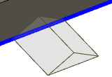

<div id="tabShape"><p>タブは四角形または三角形の形状にすることができます。<br></p>
<table class="tipTable" cellspacing="10">
<tr>
<td><center></center></td>
<td><center></center></td>
</tr><tr>
<td><center><p><b>長方形のタブ</b></p></center></td>
<td><center><p><b>三角形のタブ</b></p></center></td>
</tr></table>
</div>